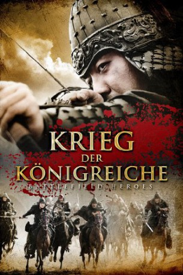

IMDB-Wertung: 5.4 / 10
IMDB-Wertung: 5.4 / 10  Metascore:
Metascore: 
This story unfolds 8 years after 'Battle of Hwangsanbeol', which destroyed Baekjae, when Silla-Tang Dynasty union attacks Goguryeo.
Alternativ: Battlefield Heroes (Englischer Titel)
 IMDB-Wertung: 5.4 / 10 Metascore:
This story unfolds 8 years after 'Battle of Hwangsanbeol', which destroyed Baekjae, when Silla-Tang Dynasty union attacks Goguryeo.
Jahr: 2011
Dauer: 118 Minuten
FSK: 16
Land: Süd-Korea Studio: KSMTonspuren:
Untertitel: Deutsch,
Auflösung: 1080p (1920x816) Größe: 7372 MB
Regisseur: Joon-ik Lee
Drehbuch: Cheol-Hyeon Jo
Soundtrack: Joon-seok Kim
Darsteller:
 Seung-ryong Ryu als Yeon Gaesomun's Second Son, Nam-Geon
Seung-ryong Ryu als Yeon Gaesomun's Second Son, Nam-GeonDatei: X:\HD-Eastern-Classic(A-M)\Krieg der Königreiche (2011, FSK16, 1920x816).mkv seit 02.01.2018
Festplatte: HD Eastern+Western
 Es gibt insgesamt 63 Filme in der Gruppe 'HD-Eastern-Classic(A-M)'
Es gibt insgesamt 63 Filme in der Gruppe 'HD-Eastern-Classic(A-M)'